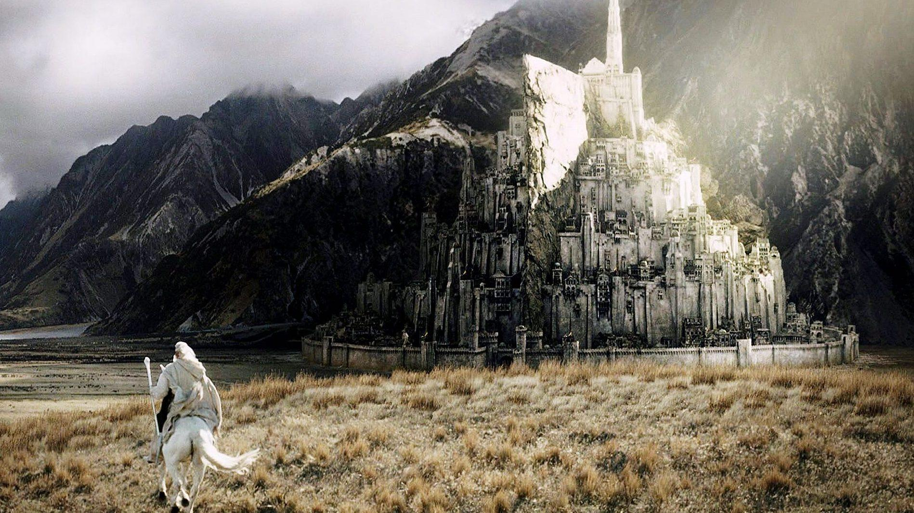
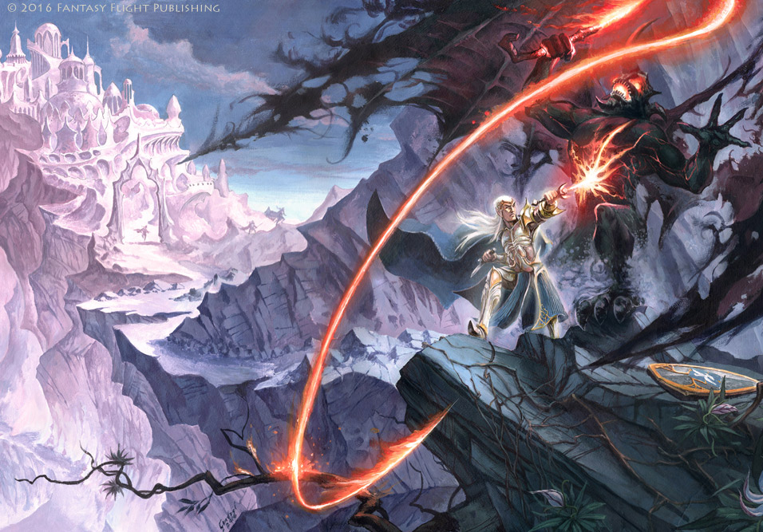
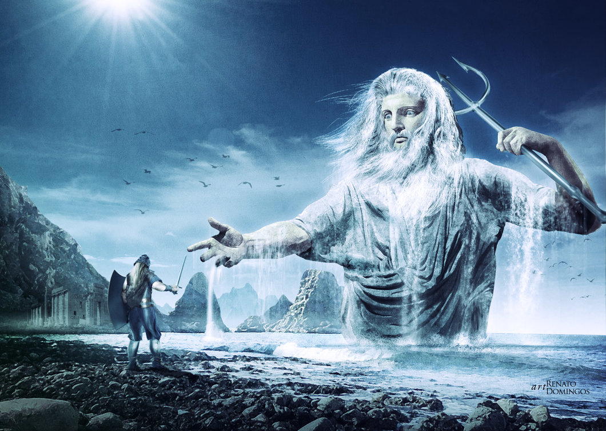

J.R.R Tolkien created a vast world that goes far beyond The Hobbit and Lord of the Ring. Here at Finding Middle-Earth we are deticated to guiding you through Tolkiens vast legendarium!

Gandolf Approaching Minas Tirith

Glorfindel slaying a Belrog after the sacking of Gondolin
He was able to stab it in the belly, but as the Balrog fell it reached out and grabbed Glorfindel's long golden hair, pulling him back down over the edge of the cliff. Glorfindel perished but Thorondor bore his body and buried him.

Tuor and the meeting of Olmo
Tuor Eladar was a hero of the Edain in the last years of the First Age and the father of Eärendil. In spite of being a Man, he was chosen by the Vala Ulmo to be the last hope of the Noldor in the face of annihilation by the forces of Morgoth.